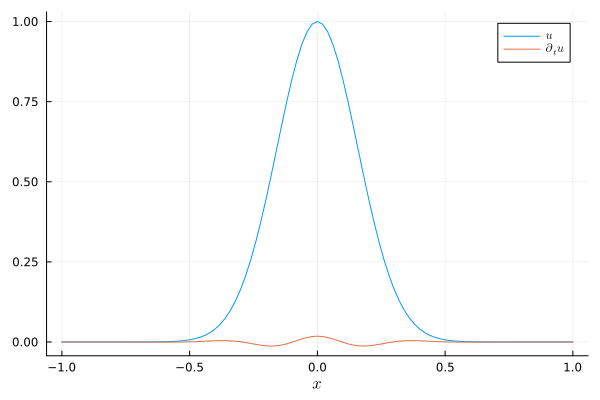

Wave equation
Consider the linear wave equation
\[\begin{aligned} \partial_t^2 u(t,x) &= \partial_x^2 u(t,x), && t \in (0,T), x \in (x_{min}, x_{max}), \\ u(0,x) &= u_0(x), && x \in (x_{min}, x_{max}), \\ \partial_t u(0,x) &= v_0(x), && x \in (x_{min}, x_{max}), \\ \text{boundary conditions}, &&& x \in \partial (x_{min}, x_{max}). \end{aligned}\]
SummationByPartsOperators.jl includes a pre-built semidiscretization of this equation: WaveEquationNonperiodicSemidiscretization. Have a look at the source code if you want to dig deeper. In particular, you can find applications of derivative_left, derivative_right mul_transpose_derivative_left!, and mul_transpose_derivative_right!. Below is an example demonstrating how to use this semidiscretization.
using SummationByPartsOperators, OrdinaryDiffEqRKNusing LaTeXStrings; using Plots: Plots, plot, plot!, savefig# general parametersxmin = -1.xmax = +1.tspan = (0., 8.0)u0_func(x) = exp(-20x^2)v0_func(x) = zero(x)# HomogeneousNeumann, HomogeneousDirichlet, and NonReflecting BCs are availableleft_bc = Val(:HomogeneousNeumann)right_bc = Val(:HomogeneousDirichlet)# setup spatial semidiscretizationD2 = derivative_operator(MattssonSvärdShoeybi2008(), derivative_order=2, accuracy_order=4, xmin=xmin, xmax=xmax, N=101)semi = WaveEquationNonperiodicSemidiscretization(D2, left_bc, right_bc)ode = semidiscretize(v0_func, u0_func, semi, tspan)# solve second-order ODE using a Runge-Kutta-Nyström methodsol = solve(ode, DPRKN6(), saveat=range(first(tspan), stop=last(tspan), length=200))# visualize the resultplot(xguide=L"x")plot!(evaluate_coefficients(sol.u[end].x[2], semi), label=L"u")plot!(evaluate_coefficients(sol.u[end].x[1], semi), label=L"\partial_t u")savefig("example_wave_equation.png");"/home/runner/work/SummationByPartsOperators.jl/SummationByPartsOperators.jl/docs/build/tutorials/example_wave_equation.png"
Advanced visualization of different boundary conditions
Let's create animations of the numerical solutions for different boundary conditions.
using Printf; using Plots: Animation, frame, giffunction create_gif(left_bc::Val{LEFT_BC}, right_bc::Val{RIGHT_BC}) where {LEFT_BC, RIGHT_BC} xmin = -1. xmax = +1. tspan = (0., 8.0) u0_func(x) = exp(-20x^2) v0_func(x) = zero(x) D2 = derivative_operator(MattssonSvärdShoeybi2008(), derivative_order=2, accuracy_order=4, xmin=xmin, xmax=xmax, N=101) semi = WaveEquationNonperiodicSemidiscretization(D2, left_bc, right_bc) ode = semidiscretize(v0_func, u0_func, semi, tspan) sol = solve(ode, DPRKN6(), saveat=range(first(tspan), stop=last(tspan), length=200)) anim = Animation() idx = 1 x, u = evaluate_coefficients(sol.u[idx].x[2], D2) fig = plot(x, u, xguide=L"x", yguide=L"u", xlim=extrema(x), ylim=(-1.05, 1.05), label="", title=@sprintf("\$t = %6.2f \$", sol.t[idx])) for idx in 1:length(sol.t) fig[1] = x, sol.u[idx].x[2] plot!(title=@sprintf("\$t = %6.2f \$", sol.t[idx])) frame(anim) end gif(anim, "wave_equation_$(LEFT_BC)_$(RIGHT_BC).gif")endcreate_gif(Val(:HomogeneousNeumann), Val(:HomogeneousNeumann))
create_gif(Val(:HomogeneousNeumann), Val(:HomogeneousDirichlet))
create_gif(Val(:HomogeneousNeumann), Val(:NonReflecting))
Package versions
These results were obtained using the following versions.
using InteractiveUtilsversioninfo()using PkgPkg.status(["SummationByPartsOperators", "OrdinaryDiffEqRKN"], mode=PKGMODE_MANIFEST)Julia Version 1.10.11
Commit a2b11907d7b (2026-03-09 14:59 UTC)
Build Info:
Official https://julialang.org/ release
Platform Info:
OS: Linux (x86_64-linux-gnu)
CPU: 4 × AMD EPYC 7763 64-Core Processor
WORD_SIZE: 64
LIBM: libopenlibm
LLVM: libLLVM-15.0.7 (ORCJIT, znver3)
Threads: 2 default, 0 interactive, 1 GC (on 4 virtual cores)
Environment:
JULIA_PKG_SERVER_REGISTRY_PREFERENCE = eager
Status `~/work/SummationByPartsOperators.jl/SummationByPartsOperators.jl/docs/Manifest.toml`
[af6ede74] OrdinaryDiffEqRKN v2.1.1
[9f78cca6] SummationByPartsOperators v0.5.97-DEV `~/work/SummationByPartsOperators.jl/SummationByPartsOperators.jl`